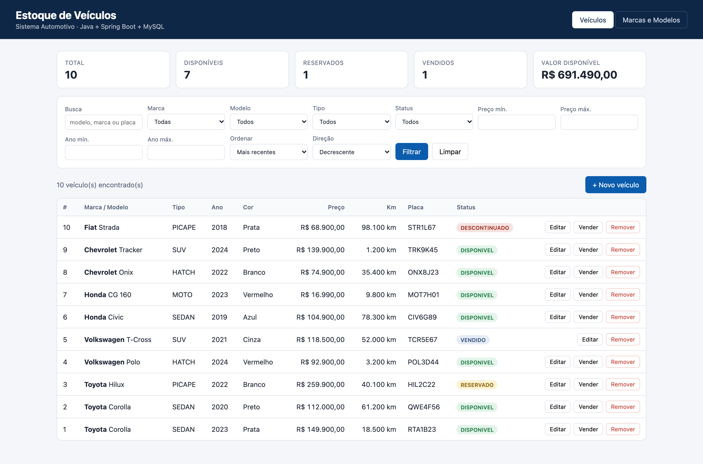
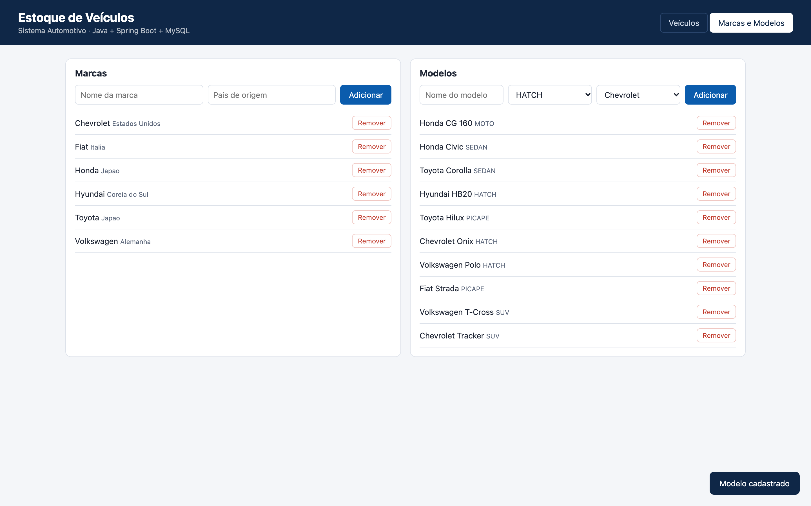
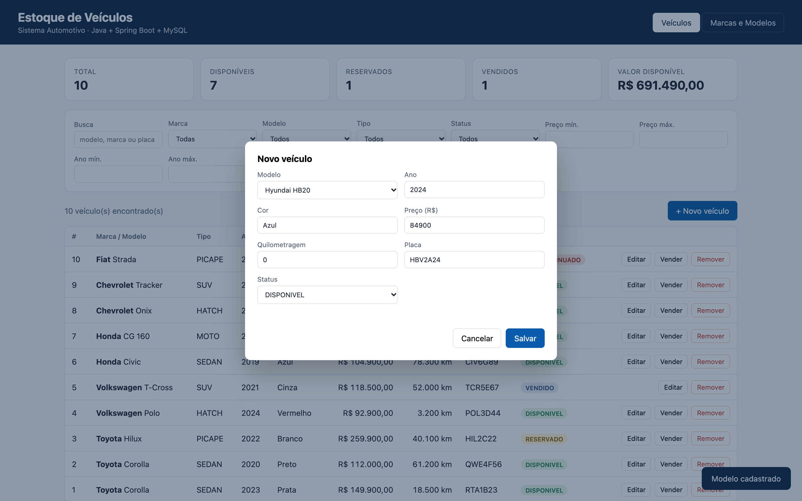
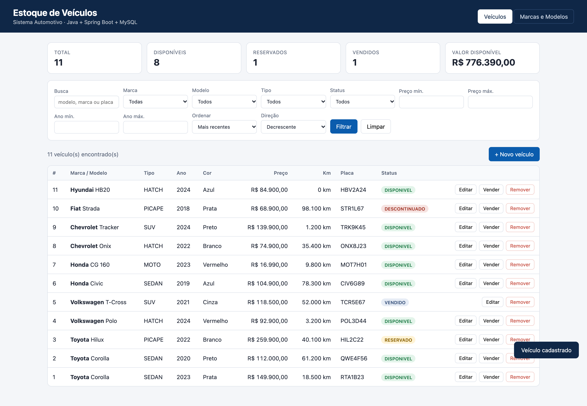
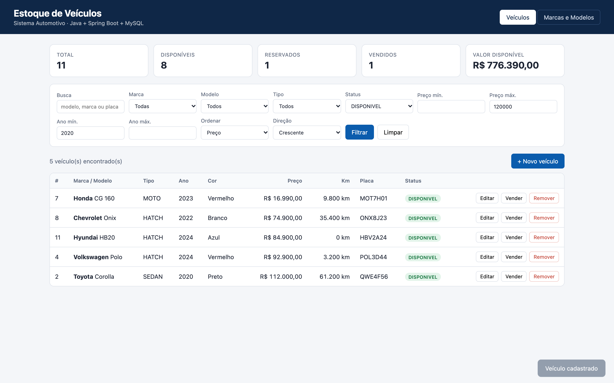
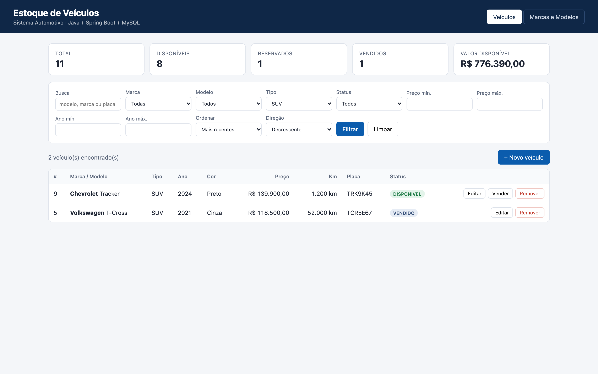
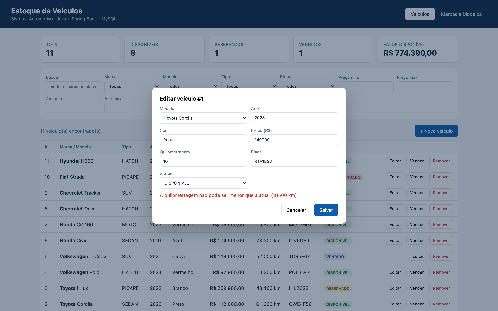
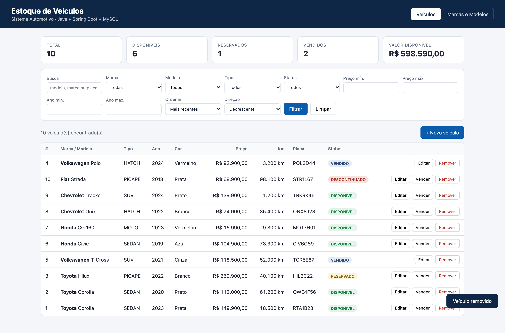
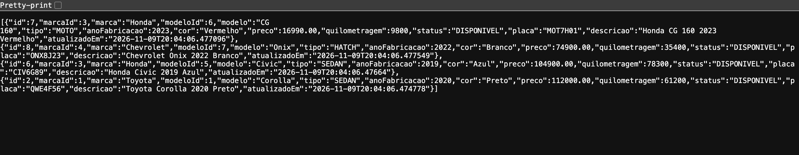
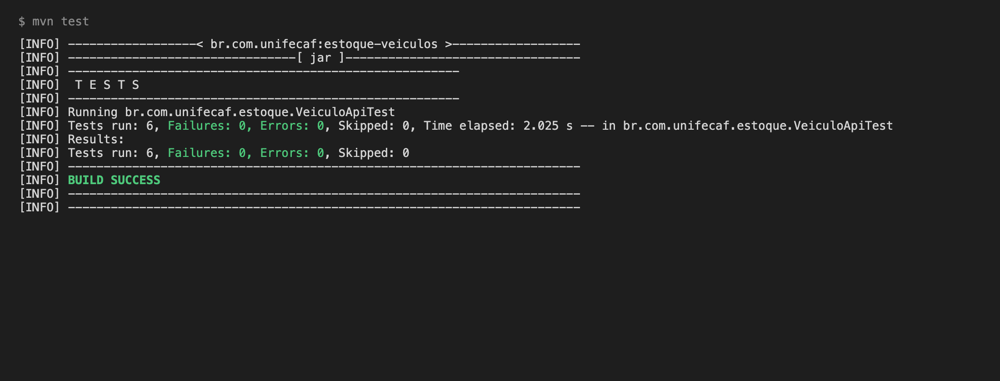

Concessionárias e revendas de veículos lidam diariamente com um estoque que muda o tempo todo: carros entram, recebem novos preços, rodam em test drives, são reservados e vendidos. Quando esse controle é feito em planilhas separadas ou anotações manuais, as informações ficam desatualizadas, vendedores oferecem carros que já foram vendidos e o gerente não tem uma visão confiável do que está disponível.
Este trabalho apresenta o desenvolvimento de um sistema CRUD orientado a objetos para gestão de estoque de veículos. O sistema permite cadastrar marcas, modelos e veículos, consultar o estoque com filtros combinados (marca, modelo, tipo, preço, ano e status), atualizar preço, quilometragem e situação de cada veículo e removê-los quando vendidos ou descontinuados.
A solução foi construída como uma API REST em Java com Spring Boot, com persistência em MySQL por meio do Spring Data JPA, e uma interface web simples que consome essa API. O objetivo, além de resolver o problema de negócio, é aplicar na prática os conceitos de Programação Orientada a Objetos: classes, atributos, métodos, encapsulamento, herança, abstração e polimorfismo.
A principal causa do problema é a falta de organização: métodos manuais ou sistemas fragmentados dificultam o acesso e a atualização dos dados. Os principais afetados são:
A longo prazo, sem uma solução, a empresa acumula dificuldades de gestão, vendas perdidas e decisões tomadas com base em informações erradas.
| Solução | Prós | Contras |
|---|---|---|
| API com Spring Boot | Configuração automática, padrão de mercado, ecossistema maduro, fácil de expor endpoints REST. | Curva de aprendizado inicial para quem não conhece injeção de dependência e anotações. |
| Comunicação com banco de dados (MySQL + JPA) | Dados persistentes e consistentes, consultas eficientes com índices, mapeamento objeto-relacional automático. | Exige conhecer modelagem relacional e configurar o servidor de banco. |
| Integração com front-end | Permite que vendedores usem o sistema sem conhecer a API; a mesma API serve site e portais no futuro. | Adiciona uma camada a mais para manter (HTML, CSS e JavaScript). |
As três soluções são complementares e foram adotadas em conjunto. Os principais desafios previstos eram a pouca familiaridade com as tecnologias, os conceitos de banco de dados e as integrações entre camadas; eles foram tratados com uma arquitetura em camadas bem separadas, um script SQL documentado e um perfil de execução com banco em memória para facilitar os testes.
Para levantar os requisitos, foi simulada uma entrevista com o gerente de uma concessionária de médio porte. As perguntas buscaram entender quem usa o sistema, quais dados são necessários, quais operações são frequentes e quais regras precisam ser garantidas. As respostas abaixo são simuladas e serviram de base para os requisitos da seção 3.
P1. Quem vai usar o sistema no dia a dia?
R. Vendedores, para consultar e reservar veículos, e o gerente da loja, que cadastra, atualiza preços e acompanha o estoque.
P2. Quais informações de cada veículo são indispensáveis?
R. Marca, modelo, ano de fabricação, cor, preço, quilometragem, placa e a situação do carro (disponível, reservado, vendido ou fora de linha).
P3. Como o estoque é controlado hoje?
R. Em planilhas separadas por vendedor e em anotações no quadro da loja. Muitas vezes um vendedor oferece um carro que já foi vendido por outro.
P4. Quais buscas os vendedores mais fazem quando um cliente chega?
R. Faixa de preço, marca, tipo de carro (SUV, sedan, picape) e ano mínimo. É comum o cliente dizer, por exemplo, que quer um SUV até 120 mil, de 2020 para cima.
P5. Marcas e modelos precisam de cadastro próprio ou podem ser digitados livremente?
R. Precisam de cadastro próprio. Hoje cada um escreve de um jeito ("VW", "Volks", "Volkswagen"), o que atrapalha as buscas e os relatórios.
P6. O que acontece com o veículo quando ele é vendido?
R. Ele deve sair da vitrine de disponíveis, mas o histórico precisa continuar existindo. A remoção definitiva só ocorre em casos de erro de cadastro ou descontinuação.
P7. Quais dados mudam com mais frequência?
R. Preço (promoções e reajustes), quilometragem (test drives e deslocamentos) e status (reservas e vendas).
P8. Existe alguma regra que o sistema deve impedir?
R. Preço zerado ou negativo, quilometragem que diminui, placa duplicada, ano impossível e vender duas vezes o mesmo carro.
P9. O gerente precisa de algum indicador?
R. Sim: quantos carros estão disponíveis, reservados e vendidos, e o valor total parado em estoque disponível.
P10. Quantos veículos a loja costuma ter e quantas pessoas usam ao mesmo tempo?
R. Entre 80 e 300 veículos, com até 10 pessoas consultando ao mesmo tempo. As buscas precisam responder em menos de 1 segundo.
P11. Em quais dispositivos o sistema será usado?
R. Computador da loja e, eventualmente, tablet no pátio. A tela precisa ser simples e funcionar em telas menores.
P12. O sistema precisa conversar com outros sistemas no futuro?
R. Sim, a ideia é publicar o estoque no site da loja e em portais de anúncio. Por isso a comunicação deve ser por uma API padronizada.
| ID | Requisito | Descrição e como foi atendido |
|---|---|---|
| RF01 | Cadastro de veículos | Cadastrar veículo com modelo, marca (via modelo), ano de fabricação, cor, preço, quilometragem, placa e status. Endpoint POST /api/veiculos e modal "Novo veículo". |
| RF02 | Cadastro de marcas e modelos | Registrar marcas e modelos, sendo cada modelo associado a uma marca e cada veículo associado a um modelo. Endpoints /api/marcas e /api/modelos. |
| RF03 | Consulta e filtro de veículos | Consultar por marca, modelo, tipo, faixa de preço, faixa de ano, cor, status e busca livre, com ordenação. Endpoint GET /api/veiculos com parâmetros opcionais. |
| RF04 | Atualização de informações | Editar preço, quilometragem e status (PATCH) ou todos os dados (PUT). |
| RF05 | Remoção de veículos | Remover veículos vendidos ou descontinuados (DELETE /api/veiculos/{id}). |
| RF06 | Registro de venda | Marcar um veículo como vendido, impedindo venda em duplicidade (POST /api/veiculos/{id}/vender). |
| RF07 | Resumo do estoque | Exibir totais por status e o valor do estoque disponível (GET /api/veiculos/resumo). |
| RF08 | Validação de dados | Rejeitar preço não positivo, quilometragem negativa ou menor que a atual, ano inválido, placa duplicada e campos obrigatórios vazios. |
| ID | Requisito | Descrição e como foi atendido |
|---|---|---|
| RNF01 | Usabilidade | Interface simples, em uma única página com duas abas, filtros visíveis, formulário em janela modal, mensagens de sucesso e de erro em português e layout que se adapta a telas menores. |
| RNF02 | Performance | Filtros executados no banco (não em memória) por meio de consultas dinâmicas; índices em status, preco e ano_fabricacao; transações somente leitura nas consultas. |
| RNF03 | Integridade dos dados | Chaves estrangeiras, restrições de unicidade e verificações no banco, além das validações nas próprias classes. |
| RNF04 | Manutenibilidade | Arquitetura em camadas (controller, service, repository, model), DTOs separados das entidades e código organizado por pacotes. |
| RNF05 | Interoperabilidade | API REST com JSON, permitindo integração futura com site e portais de anúncio. |
| RNF06 | Tratamento de erros | Respostas de erro padronizadas em JSON, com o código HTTP correto (400, 404 ou 409) e detalhes legíveis. |
O domínio foi modelado com três entidades persistentes e dois tipos enumerados. Todas as entidades herdam de uma superclasse abstrata comum, EntidadeBase, que concentra o identificador e as datas de auditoria.
| Entidade | Atributos | Responsabilidade |
|---|---|---|
| Marca | id, nome (único), paisOrigem | Representa o fabricante (Toyota, Volkswagen, Honda...). Padroniza os nomes e evita variações como "VW" e "Volks". |
| Modelo | id, nome, tipo, marca | Representa o modelo comercial (Corolla, Polo, Civic) e seu tipo. Pertence a uma marca; o nome é único dentro da marca. |
| Veiculo | id, modelo, anoFabricacao, cor, preco, quilometragem, status, placa | Unidade física do estoque. Concentra as regras de preço, quilometragem, ano e venda. |
| TipoVeiculo (enum) | HATCH, SEDAN, SUV, PICAPE, MOTO, UTILITARIO | Categoriza o modelo, permitindo filtrar por tipo de veículo. |
| StatusVeiculo (enum) | DISPONIVEL, RESERVADO, VENDIDO, DESCONTINUADO | Situação do veículo no estoque. |
Uma marca possui vários modelos (1:N) e um modelo possui vários veículos (1:N). Dessa forma, o veículo chega à sua marca através do modelo, sem duplicar dados. O modelo físico completo, compatível com MySQL 8, está no arquivo database/schema.sql.
Cada conceito do negócio virou uma classe: Marca, Modelo e Veiculo no domínio; VeiculoService, MarcaService e ModeloService para as regras; controllers para a API; e DTOs para entrada e saída. Ao cadastrar um carro, por exemplo, o sistema cria um objeto Veiculo com estado próprio e o persiste no banco.
Os atributos descrevem o estado de cada objeto, com tipos adequados ao dado: BigDecimal para preço (evita erros de arredondamento de double com dinheiro), Integer para ano e quilometragem e enums para tipo e status, o que impede valores fora da lista permitida.
Além de getters e setters, as classes têm métodos de comportamento. Veiculo.vender() muda o status e impede vender duas vezes; Veiculo.isDisponivel() responde se o carro pode ser oferecido; getDescricao() monta uma descrição legível do objeto.
Todos os atributos são private. O acesso é feito por métodos públicos que validam os dados antes de alterar o estado. O setter de quilometragem, por exemplo, não aceita valor negativo nem menor que o atual; o de preço não aceita zero ou negativo; o de ano só aceita valores entre 1950 e o ano seguinte. Assim, nenhum código externo consegue deixar um veículo em estado inválido. O id e as datas de auditoria só têm getters, porque são controlados pelo próprio sistema. Os construtores sem argumentos exigidos pelo JPA são protected, impedindo a criação de objetos incompletos fora do framework.
Marca, Modelo e Veiculo estendem EntidadeBase e herdam o identificador, as datas de criação e atualização e os métodos de ciclo de vida (@PrePersist e @PreUpdate) que preenchem essas datas automaticamente. Isso evita repetir o mesmo código nas três classes. Também há herança nas exceções: RecursoNaoEncontradoException e RegraNegocioException estendem RuntimeException.
EntidadeBase é uma classe abstrata: não pode ser instanciada diretamente, pois não representa nada concreto sozinha. Ela define o método abstrato getDescricao(), que obriga cada subclasse a implementar sua própria descrição. Os repositórios também são abstrações: são interfaces e o Spring gera a implementação.
O mesmo método getDescricao() se comporta de forma diferente conforme o objeto: em Marca retorna "Toyota (Japao)", em Modelo retorna "Toyota Corolla - Sedan" e em Veiculo retorna "Toyota Corolla 2023 Prata". Um código que receba uma EntidadeBase pode chamar getDescricao() sem saber qual subclasse está tratando. Há ainda polimorfismo por interface: os serviços dependem de VeiculoRepository, e não de uma implementação concreta.
/**
* Superclasse abstrata de todas as entidades do sistema.
*
* HERANCA: Marca, Modelo e Veiculo herdam o identificador e as datas de auditoria.
* ABSTRACAO: a classe e abstrata, ou seja, nao pode ser instanciada diretamente.
* ENCAPSULAMENTO: atributos privados, acessados apenas por getters.
*/
@MappedSuperclass
public abstract class EntidadeBase {
@Id
@GeneratedValue(strategy = GenerationType.IDENTITY)
private Long id;
@Column(name = "criado_em", nullable = false, updatable = false)
private LocalDateTime criadoEm;
@Column(name = "atualizado_em")
private LocalDateTime atualizadoEm;
@PrePersist
protected void aoCriar() {
this.criadoEm = LocalDateTime.now();
this.atualizadoEm = this.criadoEm;
}
@PreUpdate
protected void aoAtualizar() {
this.atualizadoEm = LocalDateTime.now();
}
/**
* Metodo abstrato: cada subclasse descreve a si mesma de forma diferente (POLIMORFISMO).
*/
public abstract String getDescricao();
public Long getId() {
return id;
}
public LocalDateTime getCriadoEm() {
return criadoEm;
}
public LocalDateTime getAtualizadoEm() {
return atualizadoEm;
}
}| Tecnologia | Justificativa |
|---|---|
| Java 17+ | Linguagem fortemente orientada a objetos, tipada e muito usada no mercado corporativo. Recursos modernos como records deixam os DTOs curtos e imutáveis. |
| Spring Boot 3 | Configuração automática, servidor web embutido (Tomcat) e injeção de dependência. Permite criar uma API REST completa com poucas linhas, com padrão amplamente adotado nas empresas. |
| Spring Data JPA / Hibernate | Mapeia as classes Java para tabelas (ORM), gera consultas a partir do nome dos métodos e permite filtros dinâmicos com Specifications, sem escrever SQL manual. |
| Bean Validation | Valida automaticamente os dados de entrada com anotações como @NotBlank e @Positive. |
| MySQL 8 | Banco relacional gratuito, robusto e popular, adequado a dados estruturados com relacionamentos, chaves estrangeiras e índices. |
| H2 (perfil dev/testes) | Banco em memória para rodar o projeto e os testes automatizados sem precisar instalar o MySQL. |
| HTML, CSS e JavaScript | Frontend leve, sem frameworks, servido pelo próprio Spring Boot, suficiente para listar, filtrar e editar veículos. |
| Maven e Git/GitHub | Gerenciamento de dependências e build; versionamento e publicação do código. |
O sistema segue a arquitetura em camadas do padrão MVC aplicado a APIs REST. Cada camada tem uma responsabilidade única e só conversa com a camada vizinha:
model/).controller/).service/).repository/).dto/).@RestControllerAdvice (exception/).| Método | Rota | Descrição |
|---|---|---|
GET | /api/veiculos | Consulta com filtros: marcaId, modeloId, tipo, status, precoMin/Max, anoMin/Max, cor, busca, ordenação |
GET | /api/veiculos/{id} | Busca um veículo |
GET | /api/veiculos/resumo | Indicadores do estoque |
POST | /api/veiculos | Cadastra veículo |
PUT | /api/veiculos/{id} | Substitui todos os dados |
PATCH | /api/veiculos/{id} | Atualiza preço, quilometragem e/ou status |
POST | /api/veiculos/{id}/vender | Marca como vendido |
DELETE | /api/veiculos/{id} | Remove do estoque |
GET/POST | /api/marcas | Lista e cadastra marcas |
PUT/DELETE | /api/marcas/{id} | Edita e remove marca (bloqueia se houver modelos) |
GET/POST | /api/modelos | Lista (opcionalmente por marca) e cadastra modelos |
PUT/DELETE | /api/modelos/{id} | Edita e remove modelo (bloqueia se houver veículos) |
Exemplo de consulta:
GET /api/veiculos?status=DISPONIVEL&precoMax=120000&anoMin=2020&ordenarPor=preco&direcao=asc
A consulta acima retorna os veículos disponíveis de até R$ 120 mil, fabricados a partir de 2020, do mais barato para o mais caro.
database/schema.sql modelo físico MySQL requisicoes.http requisições prontas para testar a API src/main/java/br/com/unifecaf/estoque/ EstoqueVeiculosApplication.java model/ EntidadeBase, Marca, Modelo, Veiculo, TipoVeiculo, StatusVeiculo dto/ MarcaDTO, ModeloDTO, VeiculoDTO, FiltroVeiculo, ResumoEstoque repository/ MarcaRepository, ModeloRepository, VeiculoRepository, VeiculoSpecifications service/ MarcaService, ModeloService, VeiculoService controller/ MarcaController, ModeloController, VeiculoController exception/ RecursoNaoEncontradoException, RegraNegocioException, TratadorDeErros config/ CargaInicial src/main/resources/ application.properties, application-dev.properties static/ index.html, style.css, app.js src/test/java/br/com/unifecaf/estoque/VeiculoApiTest.java
A seguir estão os trechos centrais do sistema. O código completo está no repositório do GitHub.
@Entity
@Table(name = "veiculo", indexes = {
@Index(name = "idx_veiculo_status", columnList = "status"),
@Index(name = "idx_veiculo_preco", columnList = "preco"),
@Index(name = "idx_veiculo_ano", columnList = "ano_fabricacao")
})
public class Veiculo extends EntidadeBase {
public static final int ANO_MINIMO = 1950;
@ManyToOne(optional = false, fetch = FetchType.EAGER)
@JoinColumn(name = "modelo_id", nullable = false)
private Modelo modelo;
@Column(name = "ano_fabricacao", nullable = false)
private Integer anoFabricacao;
@Column(nullable = false, length = 30)
private String cor;
@Column(nullable = false, precision = 12, scale = 2)
private BigDecimal preco;
@Column(nullable = false)
private Integer quilometragem;
@Enumerated(EnumType.STRING)
@Column(nullable = false, length = 20)
private StatusVeiculo status;
@Column(unique = true, length = 10)
private String placa;
protected Veiculo() {
}
public Veiculo(Modelo modelo, Integer anoFabricacao, String cor, BigDecimal preco,
Integer quilometragem, String placa) {
this.modelo = modelo;
setAnoFabricacao(anoFabricacao);
setCor(cor);
setPreco(preco);
this.quilometragem = validarKm(quilometragem);
this.placa = placa;
this.status = StatusVeiculo.DISPONIVEL;
}
@Override
public String getDescricao() {
return modelo.getMarca().getNome() + " " + modelo.getNome() + " " + anoFabricacao + " " + cor;
}
/** Regra de negocio: marca o veiculo como vendido. */
public void vender() {
if (status == StatusVeiculo.VENDIDO) {
throw new IllegalStateException("Veiculo ja foi vendido");
}
this.status = StatusVeiculo.VENDIDO;
}
public boolean isDisponivel() {
return status == StatusVeiculo.DISPONIVEL;
}
// ---------- getters e setters com validacao ----------
public Modelo getModelo() {Trecho; os demais getters e setters seguem o mesmo padrão de validação.
public void setQuilometragem(Integer novaKm) {
validarKm(novaKm);
if (this.quilometragem != null && novaKm < this.quilometragem) {
throw new IllegalArgumentException("A quilometragem nao pode ser menor que a atual (" + this.quilometragem + " km)");
}
this.quilometragem = novaKm;
}
private static Integer validarKm(Integer km) {
if (km == null || km < 0) {
throw new IllegalArgumentException("A quilometragem nao pode ser negativa");
}
return km; public static Specification<Veiculo> comFiltro(FiltroVeiculo f) {
return (root, query, cb) -> {
List<Predicate> p = new ArrayList<>();
var modelo = root.join("modelo");
var marca = modelo.join("marca");
if (f.marcaId() != null) p.add(cb.equal(marca.get("id"), f.marcaId()));
if (f.modeloId() != null) p.add(cb.equal(modelo.get("id"), f.modeloId()));
if (f.tipo() != null) p.add(cb.equal(modelo.get("tipo"), f.tipo()));
if (f.status() != null) p.add(cb.equal(root.get("status"), f.status()));
if (f.precoMin() != null) p.add(cb.greaterThanOrEqualTo(root.get("preco"), f.precoMin()));
if (f.precoMax() != null) p.add(cb.lessThanOrEqualTo(root.get("preco"), f.precoMax()));
if (f.anoMin() != null) p.add(cb.greaterThanOrEqualTo(root.get("anoFabricacao"), f.anoMin()));
if (f.anoMax() != null) p.add(cb.lessThanOrEqualTo(root.get("anoFabricacao"), f.anoMax()));
if (f.cor() != null && !f.cor().isBlank()) {
p.add(cb.like(cb.lower(root.get("cor")), "%" + f.cor().toLowerCase().trim() + "%"));
}
if (f.busca() != null && !f.busca().isBlank()) {
String termo = "%" + f.busca().toLowerCase().trim() + "%";
p.add(cb.or(
cb.like(cb.lower(modelo.get("nome")), termo),
cb.like(cb.lower(marca.get("nome")), termo),
cb.like(cb.lower(root.get("placa")), termo)));
}
return cb.and(p.toArray(new Predicate[0]));
};
}
} @Transactional(readOnly = true)
public List<VeiculoDTO.Response> consultar(FiltroVeiculo filtro, String ordenarPor, String direcao) {
if (filtro.precoMin() != null && filtro.precoMax() != null && filtro.precoMin().compareTo(filtro.precoMax()) > 0) {
throw new IllegalArgumentException("precoMin nao pode ser maior que precoMax");
}
if (filtro.anoMin() != null && filtro.anoMax() != null && filtro.anoMin() > filtro.anoMax()) {
throw new IllegalArgumentException("anoMin nao pode ser maior que anoMax");
}
String campo = CAMPOS_ORDENACAO.contains(ordenarPor) ? ordenarPor : "atualizadoEm";
Sort sort = "asc".equalsIgnoreCase(direcao) ? Sort.by(campo).ascending() : Sort.by(campo).descending();
return veiculos.findAll(VeiculoSpecifications.comFiltro(filtro), sort)
.stream().map(VeiculoDTO.Response::de).toList();
}
@Transactional(readOnly = true)
public VeiculoDTO.Response buscar(Long id) {
return VeiculoDTO.Response.de(obter(id));
}
@Transactional
public VeiculoDTO.Response cadastrar(VeiculoDTO.Request req) {
Modelo modelo = modeloService.obter(req.modeloId());
String placa = normalizarPlaca(req.placa());
if (placa != null && veiculos.existsByPlacaIgnoreCase(placa)) {
throw new RegraNegocioException("Ja existe um veiculo com a placa " + placa);
}
Veiculo v = new Veiculo(modelo, req.anoFabricacao(), req.cor(), req.preco(), req.quilometragem(), placa);
if (req.status() != null) {
v.setStatus(req.status());
}
return VeiculoDTO.Response.de(veiculos.save(v));
}
/** PUT: substitui todos os dados do veiculo. */
@Transactional
public VeiculoDTO.Response substituir(Long id, VeiculoDTO.Request req) {
Veiculo v = obter(id);
String placa = normalizarPlaca(req.placa());
if (placa != null && !placa.equalsIgnoreCase(v.getPlaca()) && veiculos.existsByPlacaIgnoreCase(placa)) {
throw new RegraNegocioException("Ja existe um veiculo com a placa " + placa);
}
v.setModelo(modeloService.obter(req.modeloId()));
v.setAnoFabricacao(req.anoFabricacao());
v.setCor(req.cor());
v.setPreco(req.preco());
v.setQuilometragem(req.quilometragem());
v.setPlaca(placa);
if (req.status() != null) {
v.setStatus(req.status());
}
return VeiculoDTO.Response.de(v);
}
/** PATCH: atualiza apenas preco, quilometragem e/ou status. */
@Transactional
public VeiculoDTO.Response atualizarParcial(Long id, VeiculoDTO.Atualizacao req) {
Veiculo v = obter(id);
if (req.preco() == null && req.quilometragem() == null && req.status() == null) {
throw new IllegalArgumentException("Informe ao menos um campo: preco, quilometragem ou status");
}
if (req.preco() != null) v.setPreco(req.preco());
if (req.quilometragem() != null) v.setQuilometragem(req.quilometragem());
if (req.status() != null) v.setStatus(req.status());
return VeiculoDTO.Response.de(v);
}
@Transactional
public VeiculoDTO.Response vender(Long id) {@RestController
@RequestMapping("/api/veiculos")
public class VeiculoController {
private final VeiculoService service;
public VeiculoController(VeiculoService service) {
this.service = service;
}
/**
* Consulta com filtros opcionais. Exemplo:
* GET /api/veiculos?marcaId=1&status=DISPONIVEL&precoMax=100000&anoMin=2020&ordenarPor=preco&direcao=asc
*/
@GetMapping
public List<VeiculoDTO.Response> consultar(
@RequestParam(required = false) Long marcaId,
@RequestParam(required = false) Long modeloId,
@RequestParam(required = false) TipoVeiculo tipo,
@RequestParam(required = false) StatusVeiculo status,
@RequestParam(required = false) BigDecimal precoMin,
@RequestParam(required = false) BigDecimal precoMax,
@RequestParam(required = false) Integer anoMin,
@RequestParam(required = false) Integer anoMax,
@RequestParam(required = false) String cor,
@RequestParam(required = false) String busca,
@RequestParam(defaultValue = "atualizadoEm") String ordenarPor,
@RequestParam(defaultValue = "desc") String direcao) {
FiltroVeiculo filtro = new FiltroVeiculo(marcaId, modeloId, tipo, status,
precoMin, precoMax, anoMin, anoMax, cor, busca);
return service.consultar(filtro, ordenarPor, direcao);
}
@GetMapping("/resumo")
public ResumoEstoque resumo() {
return service.resumo();
}
@GetMapping("/{id}")
public VeiculoDTO.Response buscar(@PathVariable Long id) {
return service.buscar(id);
}
@PostMapping
@ResponseStatus(HttpStatus.CREATED)
public VeiculoDTO.Response cadastrar(@RequestBody @Valid VeiculoDTO.Request req) {
return service.cadastrar(req);
}
@PutMapping("/{id}")
public VeiculoDTO.Response substituir(@PathVariable Long id, @RequestBody @Valid VeiculoDTO.Request req) {
return service.substituir(id, req);
}
@PatchMapping("/{id}")
public VeiculoDTO.Response atualizar(@PathVariable Long id, @RequestBody @Valid VeiculoDTO.Atualizacao req) {
return service.atualizarParcial(id, req);
}
@PostMapping("/{id}/vender")
public VeiculoDTO.Response vender(@PathVariable Long id) {
return service.vender(id);
}
@DeleteMapping("/{id}")
@ResponseStatus(HttpStatus.NO_CONTENT)
public void remover(@PathVariable Long id) {
service.remover(id);
}
}@RestControllerAdvice
public class TratadorDeErros {
public record Erro(LocalDateTime timestamp, int status, String erro, List<String> detalhes) {
static Erro de(HttpStatus s, List<String> detalhes) {
return new Erro(LocalDateTime.now(), s.value(), s.getReasonPhrase(), detalhes);
}
}
@ExceptionHandler(RecursoNaoEncontradoException.class)
public ResponseEntity<Erro> naoEncontrado(RecursoNaoEncontradoException e) {
return resposta(HttpStatus.NOT_FOUND, List.of(e.getMessage()));
}
@ExceptionHandler(RegraNegocioException.class)
public ResponseEntity<Erro> conflito(RegraNegocioException e) {
return resposta(HttpStatus.CONFLICT, List.of(e.getMessage()));
}
@ExceptionHandler({IllegalArgumentException.class, IllegalStateException.class})
public ResponseEntity<Erro> invalido(RuntimeException e) {
return resposta(HttpStatus.BAD_REQUEST, List.of(e.getMessage()));
}
@ExceptionHandler(MethodArgumentNotValidException.class)
public ResponseEntity<Erro> validacao(MethodArgumentNotValidException e) {
List<String> detalhes = e.getBindingResult().getFieldErrors().stream()
.map(f -> f.getField() + ": " + f.getDefaultMessage())
.toList();
return resposta(HttpStatus.BAD_REQUEST, detalhes);
}
@ExceptionHandler({HttpMessageNotReadableException.class, MethodArgumentTypeMismatchException.class})
public ResponseEntity<Erro> formato(Exception e) {
return resposta(HttpStatus.BAD_REQUEST, List.of("Requisicao em formato invalido. Verifique os campos enviados."));
}
private ResponseEntity<Erro> resposta(HttpStatus s, List<String> detalhes) {
return ResponseEntity.status(s).body(Erro.de(s, detalhes));
}
}CREATE TABLE IF NOT EXISTS marca (
id BIGINT NOT NULL AUTO_INCREMENT,
nome VARCHAR(60) NOT NULL,
pais_origem VARCHAR(60) NULL,
criado_em DATETIME(6) NOT NULL,
atualizado_em DATETIME(6) NULL,
CONSTRAINT pk_marca PRIMARY KEY (id),
CONSTRAINT uk_marca_nome UNIQUE (nome)
) ENGINE = InnoDB;
CREATE TABLE IF NOT EXISTS modelo (
id BIGINT NOT NULL AUTO_INCREMENT,
nome VARCHAR(80) NOT NULL,
tipo VARCHAR(20) NOT NULL, -- HATCH, SEDAN, SUV, PICAPE, MOTO, UTILITARIO
marca_id BIGINT NOT NULL,
criado_em DATETIME(6) NOT NULL,
atualizado_em DATETIME(6) NULL,
CONSTRAINT pk_modelo PRIMARY KEY (id),
CONSTRAINT uk_modelo_marca UNIQUE (nome, marca_id),
CONSTRAINT fk_modelo_marca FOREIGN KEY (marca_id) REFERENCES marca (id)
) ENGINE = InnoDB;
CREATE TABLE IF NOT EXISTS veiculo (
id BIGINT NOT NULL AUTO_INCREMENT,
modelo_id BIGINT NOT NULL,
ano_fabricacao INT NOT NULL,
cor VARCHAR(30) NOT NULL,
preco DECIMAL(12,2) NOT NULL,
quilometragem INT NOT NULL,
status VARCHAR(20) NOT NULL, -- DISPONIVEL, RESERVADO, VENDIDO, DESCONTINUADO
placa VARCHAR(10) NULL,
criado_em DATETIME(6) NOT NULL,
atualizado_em DATETIME(6) NULL,
CONSTRAINT pk_veiculo PRIMARY KEY (id),
CONSTRAINT uk_veiculo_placa UNIQUE (placa),
CONSTRAINT fk_veiculo_modelo FOREIGN KEY (modelo_id) REFERENCES modelo (id),
CONSTRAINT ck_veiculo_preco CHECK (preco > 0),
CONSTRAINT ck_veiculo_km CHECK (quilometragem >= 0)
) ENGINE = InnoDB;
-- Indices para acelerar os filtros mais usados (requisito de performance)
CREATE INDEX idx_veiculo_status ON veiculo (status);
CREATE INDEX idx_veiculo_preco ON veiculo (preco);
CREATE INDEX idx_veiculo_ano ON veiculo (ano_fabricacao);O projeto inclui testes de integração (VeiculoApiTest) que sobem a aplicação com banco H2 e verificam: listagem, filtro por status e preço, ciclo completo de CRUD (criar, atualizar, vender, remover), rejeição de quilometragem menor que a atual, rejeição de dados inválidos e bloqueio da remoção de marca com modelos.
Os prints abaixo foram capturados com o sistema rodando localmente (http://localhost:8080, Java 21, perfil dev com banco H2 em modo de compatibilidade MySQL), seguindo um roteiro real de uso: cadastro, consulta com filtros, edição, validação, venda e remoção. Os dados de exemplo (5 marcas, 9 modelos e 10 veículos) são carregados automaticamente na primeira execução.

Tela inicial do sistema. Página http://localhost:8080 com os indicadores do estoque (10 veículos da carga inicial) e a lista completa, com ações de editar, vender e remover.

Cadastro de marcas e modelos. Aba "Marcas e Modelos" após cadastrar a marca Hyundai e o modelo HB20 (HATCH) associado a ela.


Cadastro de veículo (CREATE). Janela "Novo veículo" preenchida com um Hyundai HB20 2024 e, em seguida, o veículo já listado (id 11) com o total do estoque atualizado para 11.

Consulta com filtros combinados (READ). Status DISPONIVEL, preço máximo R$ 120.000 e ano mínimo 2020, ordenado por preço crescente: 5 veículos encontrados.

Filtro por tipo. Somente os veículos do tipo SUV.
Edição de veículo (UPDATE). Janela "Editar veículo #11" alterando o preço para R$ 82.900 e a quilometragem para 50 km.

Validação de regra de negócio. Tentativa de reduzir a quilometragem do Corolla de 18.500 km para 10 km: a API recusa (HTTP 400) e a mensagem aparece no formulário.

Venda e remoção (DELETE). O Polo foi marcado como VENDIDO e o HB20 foi removido (mensagem "Veículo removido"); os indicadores foram recalculados.

API REST respondendo em JSON. Resposta de GET /api/veiculos?status=DISPONIVEL&precoMax=120000&ordenarPor=preco&direcao=asc aberta no navegador.

Testes automatizados. Saída do comando mvn test: 6 testes de integração executados, sem falhas (BUILD SUCCESS).
dev)src/main/resources/application.properties.database/schema.sql no MySQL Workbench.mvn spring-boot:run.http://localhost:8080.Rode mvn spring-boot:run -Dspring-boot.run.profiles=dev. O sistema usa o banco H2 em memória com os mesmos dados de exemplo.
O sistema desenvolvido atende aos cinco requisitos funcionais propostos (cadastro de veículos, cadastro de marcas e modelos, consulta com filtros, atualização e remoção) e acrescenta registro de venda, indicadores de estoque e validações de negócio que protegem a qualidade dos dados. Os requisitos não funcionais de usabilidade e performance foram tratados com uma interface direta e com filtros executados no banco, apoiados por índices.
Do ponto de vista acadêmico, o projeto mostrou como os conceitos de POO deixam o código mais seguro e fácil de manter: o encapsulamento garante que um veículo nunca fique em estado inválido, a herança elimina repetição entre as entidades, a abstração define um contrato comum e o polimorfismo permite tratar objetos diferentes de forma uniforme. A separação em camadas facilita evoluções futuras, como autenticação de usuários, upload de fotos dos veículos, relatórios de vendas por período e integração com portais de anúncio.